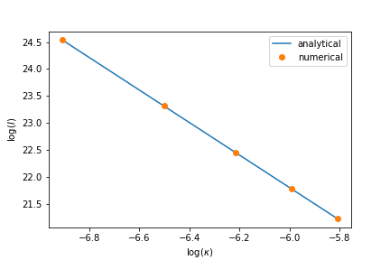

问题
已知积分
$$\begin{align} I(\kappa) = \int_{r_c}^{\infty} r^2 F(\kappa r) \mathrm{d}r \end{align}$$其中 $F(\kappa r)$ 是一个无量纲的函数, $r_c$ 是常数. 问 $I(\kappa)$ 在 $\kappa \to 0$ 时的行 为.
方法
令 $x = \kappa r$ , 则
$$\begin{align} I = \frac{1}{\kappa^3}\int_{\kappa r_c} ^{\infty} x^2 F(x) \mathrm{d}x \sim \frac{1}{\kappa^3} \int_0^{\infty} x^2 F(x) \mathrm{d}x = \frac{\sharp}{\kappa^3} \quad \mathrm{as} \quad \kappa \to 0 \end{align}$$即 $I(\kappa)$ 在 $\kappa \to 0$ 时以 $1/\kappa^3$ 的速度发散.
评述
比较直接的思路, 是直接把 $F(\kappa r)$ 在 $\kappa = 0$ 处展开, 再把 $r$ 积掉. 但是 $F$ 形式如果未知就行不通了.
此法当然要求 $\int_0^{\infty} x^2 F(x) \mathrm{d}x$ 收敛于一个常数, 也要 求积分限在做换元后也趋于一个常数( $\kappa r_c \to 0$ as $\kappa\to 0$ )
数值验证
对于
$$\begin{align} I(\kappa) = \int_{ - \infty}^{ + \infty} r^{2} e^{ - (\kappa r - 5)^2} \mathrm{d}r \end{align}$$用 sage 验证 $I(\kappa) \sim \sharp/\kappa^3$ , 其中 $\sharp = \int_{ - \infty}^{ + \infty} r^{2} e^{ - (r - 5)^2} \mathrm{d}r$ 是一个常数:

code: (第一次用 Sage, 有些函 数不知道怎么实现, 只能和 numpy, pyplot 混着用了 ^_^%)
# sage file
# sage file
import numpy as np
import matplotlib.pyplot as plt
x = SR.var('x')
r = SR.var('r')
κ = SR.var('κ')
F = exp(-(x - 5)**2)
I(κ) = integrate(r**2 * F(κ*r), r, -infinity, infinity)
n = 5
yy = []
xx = np.linspace(1e-3, 3e-3, n)
for i in range(n):
yy.append(I(xx[i]))
k = integrate(r**2 * F(r), r, -infinity, infinity) # analytical slope
plt.plot(log(xx), -3*log(xx) + log(k), label='analytical')
plt.plot(np.log(xx), np.log(yy), 'o', label='numerical')
plt.xlabel(r'$\log(\kappa)$')
plt.ylabel(r'$\log(I)$')
plt.legend()
plt.savefig('fig.png')致谢
Qi